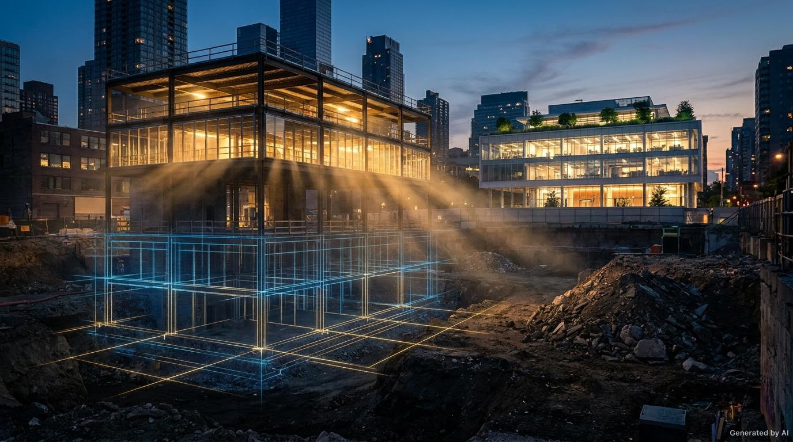
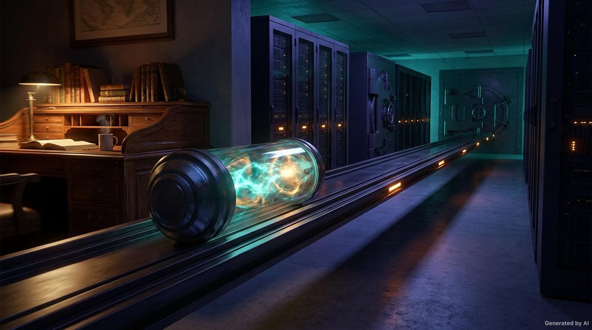
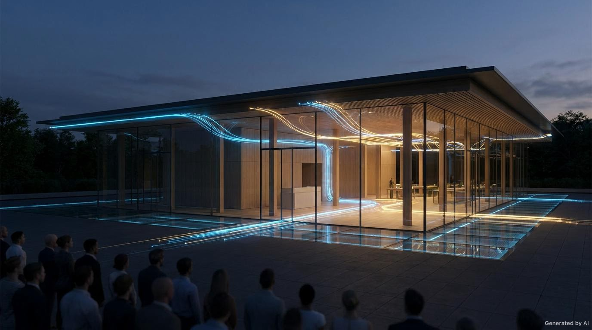
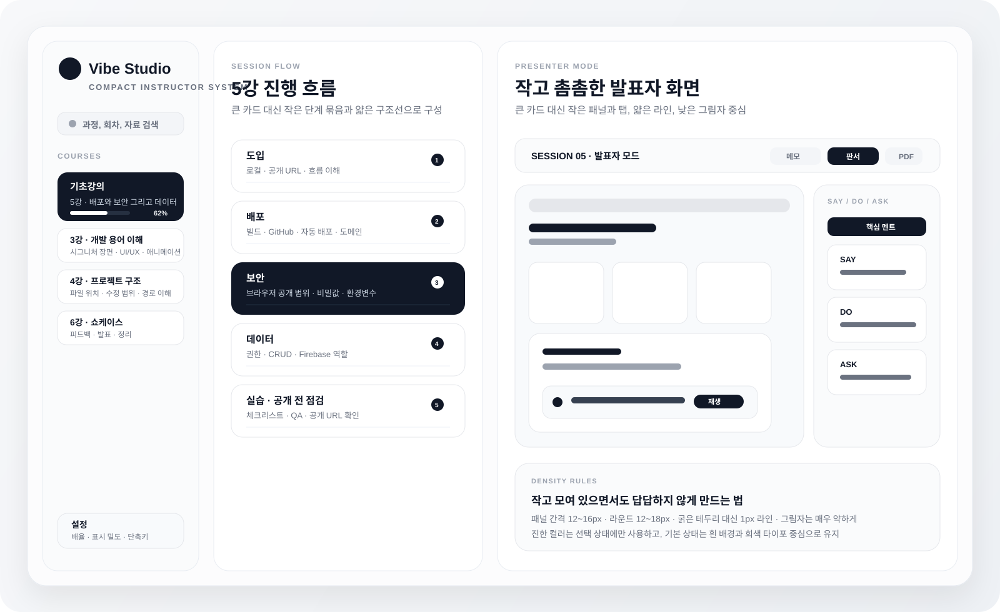

1. 아이디어 → 구현 장면
5강 도입이나 배포 파트에 맞는 방식으로, 구조가 점점 만들어지는 장면을 써서 “서비스가 현실이 되는 느낌”을 강하게 줄 수 있습니다.
원하시는 건 일반적인 교육용 슬라이드가 아니라, 3강 2번 슬라이드처럼 시선을 확 끌어당기는 시네마틱 설명 장면이고, 프로그램 UI는 반대로 Notion·Apple 계열의 작고 촘촘한 컴팩트 구조여야 합니다.

3강 2번 슬라이드가 강한 이유는 단순히 이미지가 좋아서가 아니라, 한 건물이 단계적으로 완성되는 동일 세계관이 있고, 강사가 설명할 때마다 한 포인트씩만 움직인다는 점입니다. 이 원리를 5강에도 그대로 이식하면 됩니다.
5강 도입이나 배포 파트에 맞는 방식으로, 구조가 점점 만들어지는 장면을 써서 “서비스가 현실이 되는 느낌”을 강하게 줄 수 있습니다.

실제 UI 없이도 보안 개념을 설명할 수 있습니다. 로컬 공간에서 보호된 구역으로 이동하는 오브젝트만으로도 강한 몰입감을 만들 수 있습니다.

공개 전 대기 상태에서 점등되는 공간 비유로 가면, “드디어 서비스가 켜진다”는 감정을 만들 수 있습니다. 발표 장면에서 특히 효과적입니다.
실사 같아 보이지만, 특정 서비스 화면을 베끼지 않는 것이 중요합니다. 그래서 오브젝트, 공간, 건축, 소재, 빛의 방향으로 장면을 구성합니다.
시선을 끈다고 해서 빠르고 많이 움직이면 오히려 유치해집니다. 장면 안에서는 한 번에 한 가지 현상만 켜져야 고급스럽습니다.
실제 웹 화면 캡처, 과한 파티클, 빠른 줌 반복, 강한 바운스, 한 장면에서 여러 요소가 동시에 움직이는 방식은 피하는 것이 좋습니다.
실제로 제작할 때는 아래 규칙으로 맞추면 3강 2번 슬라이드처럼 밀도 있고 집중력 있는 결과가 나옵니다.
방금 말씀하신 취향은 아주 명확합니다. 지금처럼 큰 카드가 화면을 주도하는 방식보다, 작고 가까운 정보 단위들이 정갈하게 모여 있는 편이 더 잘 맞습니다.
지금 제안드렸던 큰 카드형 UI는 취향과 맞지 않았습니다. 새 방향은 아래처럼 가는 게 맞습니다.
작은 섹션, 얇은 선, 낮은 대비, 촘촘한 정보 블록, 작은 툴바, 작지만 선명한 선택 상태
너무 큰 카드, 비어 보이는 여백, 과한 컬러 블록, 하나의 기능이 지나치게 큰 덩어리로 보이는 구조

네, 원하시는 방향으로 충분히 제작 가능합니다. 그리고 지금 피드백을 기준으로 보면 방향은 아주 분명합니다.
실제 UI 화면 리디자인 시안과 5강 슬라이드별 장면/모션 시퀀스 표를 바로 제작하는 것이 가장 좋습니다.